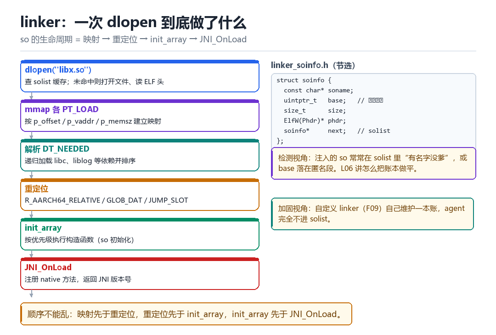
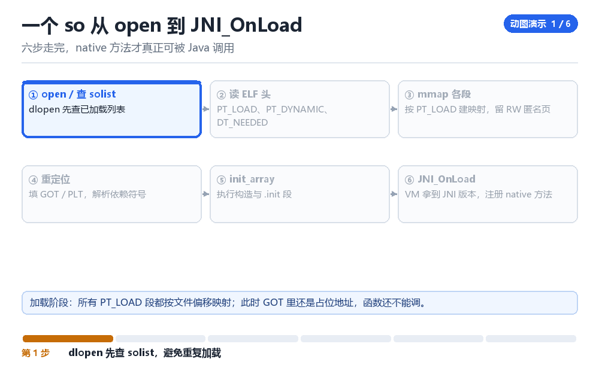

Android linker 启动过程
从 open so 到 JNI_OnLoad 结束
so 的一生只有五步，但这五步里的每一步都能被观测、被利用、被伪造。
6.1 五步生命周期

- dlopen：先查
solist缓存，命中就直接返回；没命中就打开文件、读 ELF 头。 - mmap：按每个
PT_LOAD段的p_offset/p_vaddr/p_memsz建立映射，分别给 r-x、r--、rw- 权限。 - 解析依赖：读
DT_NEEDED，递归加载 libc、liblog 等，并按依赖顺序排好初始化顺序。 - 重定位：处理
R_AARCH64_RELATIVE（基址加偏移）、GLOB_DAT（全局符号）、JUMP_SLOT（GOT 表项）。 - 初始化：按
DT_INIT_ARRAY顺序跑构造函数，最后调用JNI_OnLoad注册 native 方法。
6.2 linker 的两本账
solist 是一条单向链表，把所有已加载的 so 串起来；每个节点是一个 soinfo，记着 soname、映射基址、大小、phdr 指针。另一本是 link_map（兼容 glibc 语义），用于 dl_iterate_phdr 之类的遍历。
检测方最常用的手法，就是遍历这两本账，逐个核对：“这个 so 是谁加载的？它的 base 落在哪个区间？文件真的存在吗？”
#include <link.h>
static int cb(struct dl_phdr_info* info, size_t size, void* data) {
LOGI("base=%p name=%s", (void*)info->dlpi_addr, info->dlpi_name);
return 0;
}
dl_iterate_phdr(cb, nullptr);6.3 自定义 linker 的动机
如果 agent 走系统的 dlopen，那么它在 solist 里必然留下一条记录——名字再普通也是记录。自定义 linker（F09 详述）的意义就是：自己 mmap、自己重定位、自己跑 init_array，绕开系统账本。
| 做法 | maps 里的样子 | solist 里的样子 |
|---|---|---|
| 系统 dlopen | 有路径的映射段 | 有 soname 的记录 |
| 内存 dex/so 加载 | 匿名可执行段 | 无记录 |
| 自定义 linker | 匿名可执行段（可控权限） | 无记录 |
| 伪装成系统库 | 路径看起来正常 | 记录正常但 base 可疑 |
6.4 本章自测
- dlopen 的六个阶段按顺序说出来。
- R_AARCH64_RELATIVE 与 GLOB_DAT 的区别是什么？
- 为什么“匿名可执行段”是一个强检测信号？有没有正当场景？
- 自定义 linker 最容易漏掉的三件事是什么？
6.5 深入：符号解析与符号可见性
一个 so 里定义的函数，默认是“全局可见”的，除非用 -fvisibility=hidden 或版本脚本限制。这决定了两件事：别人能不能 dlsym 到它，以及 GOT hook 能不能生效。
| 可见性 | 能否被外部 dlsym | 典型用途 |
|---|---|---|
| default | 能 | 对外 API |
| hidden | 不能 | 内部实现（推荐默认） |
| protected | 能，但内部调用不走 PLT | 性能敏感的内部函数 |
protected 这个细节很关键：它意味着“内部调用不经过 PLT”，所以 GOT hook 对它无效——想拦这类调用，只能上 inline hook。
6.6 实战：手工算一个函数地址
- 从
/proc/self/maps找到目标 so 的映射基址（第一段的起始地址）。 - 解析 ELF 的 program header，找到
PT_DYNAMIC。 - 从
DT_SYMTAB/DT_STRTAB/DT_HASH（或DT_GNU_HASH）构建符号表。 - 按名字查
st_value，加上基址就是运行时地址。
base = first_mapping_base("libtarget.so");
dyn = find_dynamic(base);
symtab = base + dyn[DT_SYMTAB];
strtab = base + dyn[DT_STRTAB];
addr = base + lookup(symtab, strtab, "target_func");6.7 原理推演：为什么“延迟绑定”让 GOT hook 成为可能
如果所有外部函数调用都在加载时解析完地址，那么 GOT 表在加载后就是只读的，改它需要改页权限。而 ELF 的“延迟绑定”（lazy binding）机制让第一次调用时还要经过 PLT → resolver → GOT 的流程，这就给了“改表项”一个自然的时机与位置。
| 绑定方式 | GOT 何时填 | hook 难度 |
|---|---|---|
| 立即绑定（BIND_NOW） | 加载时 | 中（需改页权限） |
| 延迟绑定 | 首次调用时 | 低（时机明确） |
这也解释了为什么有些加固会开启 -Wl,-z,now：让所有符号在加载时解析完，减少“首次调用”这个可被利用的窗口。
6.8 数据细节：一个 so 的典型段布局
| 段 | 权限 | 内容 |
|---|---|---|
| PT_LOAD #1 | r-- | ELF 头、只读数据 |
| PT_LOAD #2 | r-x | 代码 |
| PT_LOAD #3 | rw- | 数据、GOT、BSS |
| PT_GNU_RELRO | 之后设为 r-- | 重定位后只读区 |
| PT_DYNAMIC | r-- | 动态链接信息 |
注意 PT_GNU_RELRO：它让“重定位完成后”的一段区域变成只读。所以想在 GOT 上做手脚，往往要先把 RELRO 保护的那一页改回来——这本身就是一个可以被检测到的动作。
把 dlopen 拆成一帧一帧
六步走完，native 方法才真正可被 Java 调用

App 里那行 System.loadLibrary 看起来只是一句声明。把它按成逐帧回放：Java 层先去找 so 到底躺在哪个目录，然后一次调用穿过 JNI 掉进 bionic linker；linker 打开文件、只读几十个字节的 ELF 头，接着连续发起若干次 mmap，把磁盘上的段一页页铺进内存；再回头把依赖一个个拉进来、把表项一个个填好、把构造函数一个个跑完，最后才轮到 JNI_OnLoad。整个过程中，没有一帧是「加载完了」——只有一长串必须按顺序做完的动作。
为什么要盯这么细？因为每一步都有可观测的副作用：mmap 会在 /proc/self/maps 里留段，依赖加载会在 solist 里留节点，重定位会改 GOT 页，构造函数会跑你的 init_array。注入与检测的战场，就铺在这条链上。
从 loadLibrary 到 JNI_OnLoad 的八拍
- `Runtime.nativeLoad` → 对 ClassLoader → 查出
nativeLibraryDirs（如/data/app/.../lib/arm64）→ 结果：拼出libfoo.so的完整路径，交给 linker。 - linker 查缓存 → 对全局
solist→ 按 soname 比对已加载节点 → 结果：命中就只加引用计数、直接返回，后面的步骤一拍都不跑；未命中才继续。 - 读 ELF 头与 program header → 对打开的文件 → 读
e_ident、校验 machine 与 class、取出所有PT_LOAD→ 结果：知道要映射几段、每段多大、什么权限。 - 映射段 → 对
mmap→ 按p_offset/p_vaddr/p_filesz/p_memsz分别建 r-x、r--、rw- 映射，多出来的p_memsz部分（.bss）匿名补零 → 结果：文件字节第一次变成进程里的可执行页。 - 递归加载 `DT_NEEDED` → 对每个依赖名 → 走同一套查找与映射 → 结果：libc、liblog、libm 等依次入列，并按依赖关系排出初始化顺序（依赖先跑）。
- 符号解析与重定位 → 对
.rela.dyn/.rela.plt/DT_ANDROID_RELA→ 处理R_AARCH64_RELATIVE（基址加偏移）、GLOB_DAT与JUMP_SLOT（查符号填 GOT），用 GNU hash 找定义 → 结果：代码里所有外部地址变成真实地址。 - 跑构造函数 → 对
DT_INIT与DT_INIT_ARRAY→ 按数组顺序逐个调用 → 结果：全局对象被构造、自检代码被触发；这一步在JNI_OnLoad之前。 - 调 `JNI_OnLoad` → 对
JavaVM*→ 由它RegisterNatives登记 native 方法并返回JNI_VERSION_1_6→ 结果：Java 侧的native方法终于有了可跳转的实现，dlopen返回句柄。
动手：把这条链打印出来
# host：先看清楚这个 so 到底要什么
readelf -dW libfoo.so | grep -E 'SONAME|NEEDED|INIT|ANDROID_REL'
readelf -SW libfoo.so | grep -E 'init_array|got|rela.dyn'
# device：打开 bionic linker 的调试日志再启动 App
adb shell setprop debug.ld.all dlopen,dlsym
adb shell am force-stop com.target.app
adb shell am start -n com.target.app/.MainActivity
adb logcat -d -s linker:V | head -60
adb shell setprop debug.ld.all ''成功：logcat 里能看到 find_libraries 列出 libfoo.so 及其 DT_NEEDED、随后出现 calling constructors / JNI_OnLoad 相关记录，且目标 native 方法调用不抛异常。失败要按报错文案分流，这三种完全不同：dlopen failed: library ... not found 是依赖没找到（读 DT_NEEDED，补打包）；dlopen failed: cannot locate symbol ... 是重定位阶段缺符号（so 找得到，定义找不到，多半是版本不匹配）；JNI_OnLoad returned bad version 是最后一拍返回值不对。把 debug.ld.all 用完清空，否则日志会一直刷。
| 现象 | 断在哪一拍 | 一条定位命令 |
|---|---|---|
| library not found | 第 5 拍：递归加载依赖 | readelf -dW libfoo.so | grep NEEDED |
| cannot locate symbol | 第 6 拍：符号解析 | nm -D libbar.so | grep xxx |
| wrong ELF class / machine | 第 3 拍：ELF 头校验 | file libfoo.so |
| 加载成功但 native 方法报 NoSuchMethod | 第 8 拍：没 RegisterNatives | 查 JNI_OnLoad 是否被调用 |
| dlopen 两次，构造函数只跑一次 | 第 2 拍：命中 solist 缓存 | 看引用计数，属正常行为 |
这条「mmap → 依赖 → 重定位 → init_array → JNI_OnLoad」的顺序，第 09 章会直接拿来选 hook 位置：GOT hook 改的是第 6 拍填好的表项，inline hook 改的是第 4 拍映射出来的代码页；第 11 章查 solist 里空 soname 的节点，查的正是第 2 拍留下的账本；第三部讲自定义 linker 时，会把本章这八拍全部自己实现一遍。